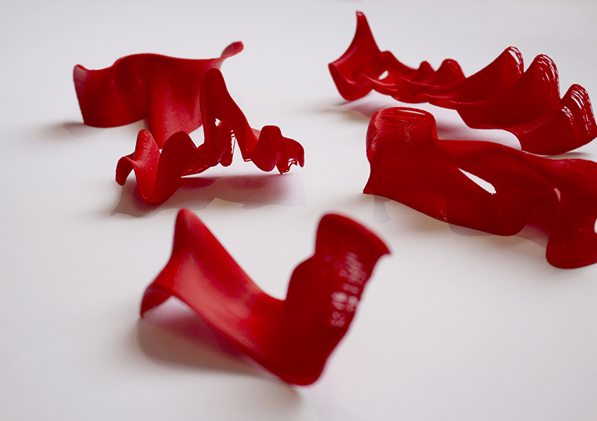
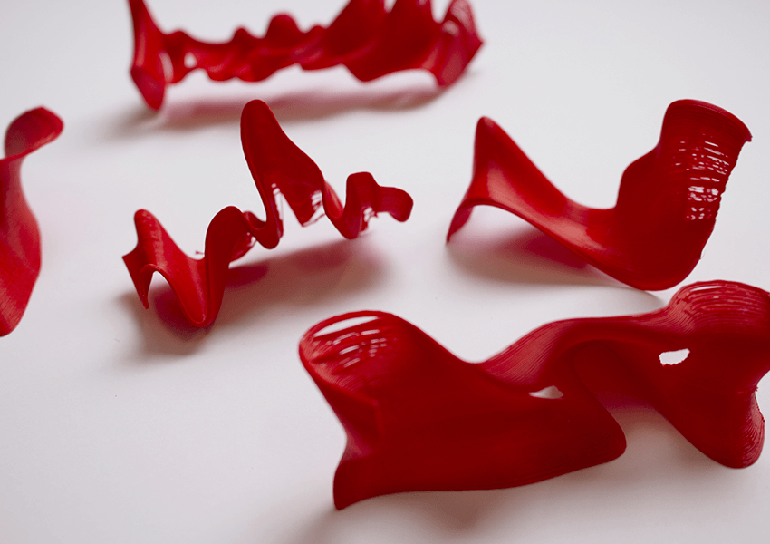
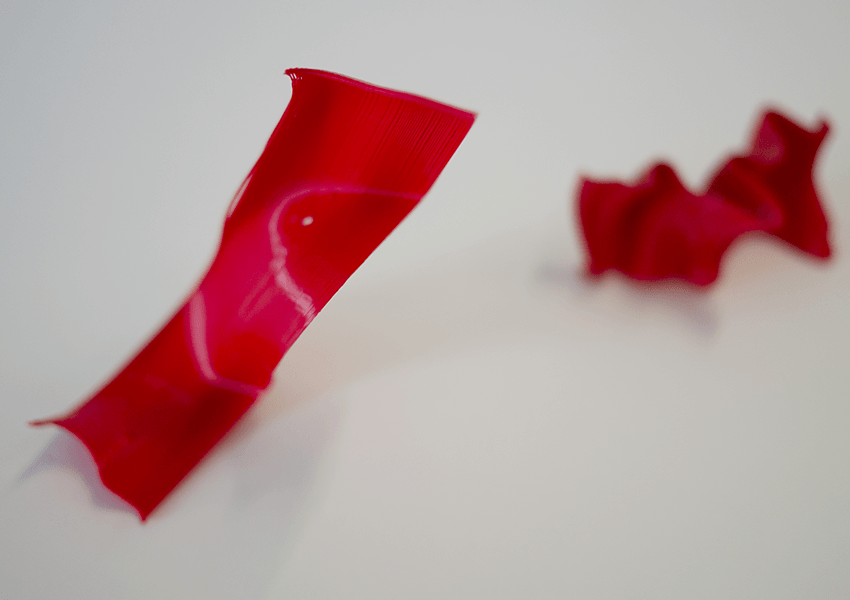
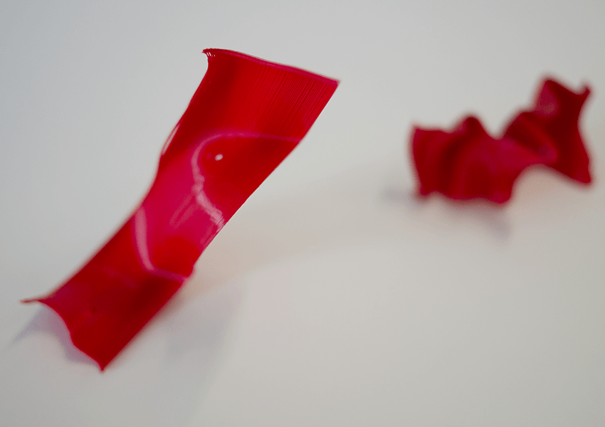
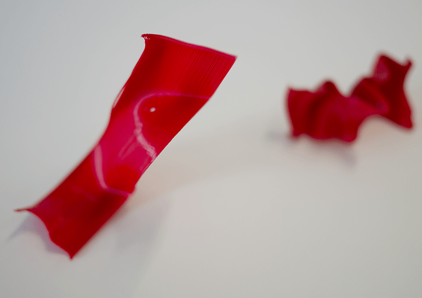
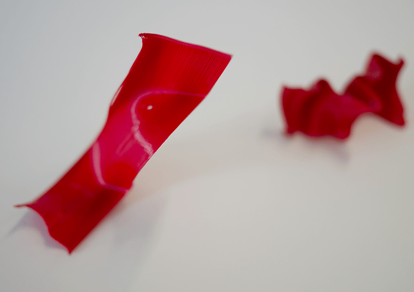

 





THANK YOU
Study project, based on the jargon of politeness, especially on the expression « Thank you ».
In the perspective to show the degree of sincerity in this word, I looked for tools to give a shape to
this expression. With ten voices of ten strangers saying the words « Thank you », ten pieces in volume
have been created, thank to a 3D modeling software and a 3D printer. The issue was to give a body to something
who has by nature no matter, here the voice. Then, the pieces have been offered on the same way we could thank
someone.